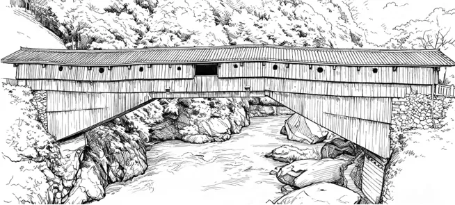

真题 · 实用类文本阅读
廊桥
辨析廊桥的定义、命名与中西结构差异，并比较专业说明与科普问答。
导读
文体与题材：建筑文化说明文。
作者简介：刘妍，建筑史研究者，著有《无与伦比的杰作——中西拱桥比较史》。
文本出处：2026年普通高等学校招生全国统一考试·全国Ⅱ卷。
内容脉络：文章由廊桥的形制与用途进入，辨析分类标准、学术名称与地方称谓，最后比较中西廊桥的结构及空间。
内容主旨：廊桥兼有交通、庇护与公共空间等功能，其称谓、结构及地域形态反映了不同的建筑传统。
阅读重点：分清名称与实体、分类标准与外观特征，比较专业说明和面向公众的解释方式。
原文
原文按结构分节；随文内容可定位至对应段落。
界定对象：廊屋覆盖全桥，兼有保护与公共服务功能。
辨析分类：廊桥按上部建筑命名，不等同于承重结构类型。
“廊桥”这个概念其实是一种当代产物。首先，“廊桥”不属于通常桥梁研究中的类型。对于桥梁而言，实现跨度的承重结构是第一要务，因此桥梁一般以承重结构的形式进行分类，如梁桥、拱桥、桁架桥等。而“廊桥”这一概念，它的定义着眼于上部建筑的类型。作为一种桥梁类型，它与桥梁的建造材料、结构形式并不绑定。其次，“廊桥”并不是中国桥梁的经典形象。谈及中国著名桥梁，人们可能更容易想到河北的赵州桥、北京的卢沟桥等等——石拱如虹，桥面之上并无建筑。若是一定要寻，古代经典中也可以找到一些覆有长廊的桥梁形象，譬如南宋李嵩《水殿招凉图》中殿侧的虹桥。但这类桥廊，更像是与亭、阁并列的“桥上建筑小品”，与地域性的传统廊桥仍有着性质上的不同。
追溯称谓：学术命名与地方语言各有其社会语境。
“廊桥”一词进入学术讨论始于民国时期，是中国第一代建筑学者所造。中国营造学社在抗日战争中不得已迁往云南昆明及四川南溪李庄一带，建筑学者的目光也从北方官式殿堂转向民间与深山。刘敦桢先生《中国之廊桥》一文写道：“唯唐白居易《修香山寺记》，有‘登寺桥一所，连桥廊七间’之句，乃现知此式桥最古之文献……今秉斯旨，暂以‘廊桥’二字撰述此文……”如今，当我们利用数据库检索古籍时，可以找到诸如“上廊桥”“玉廊桥”等桥名。但它们大多作为具体的桥梁名字，而非“廊桥”类型，并且相关文献数量寥寥。“廊桥”在文献中缺位，正因为它是一种区域现象，不属于以中原与江南[注]为代表的主流文化。
那么在廊桥的分布区，当地人怎么称呼这种桥梁呢？在方志、古籍中，廊桥的同义词有时作“屋桥”，或曰“桥上有屋”。福建学者谓另有“厝桥”一词，厝指房屋。湖南、贵州一带的廊桥，当地方言多称“凉桥”，今天则以“风雨桥”一词闻名。也许正因为常见，山林地区的人们未必需要一个专门的词语来指称有廊的桥。正如在北方，并不需要创造一个表示“无廊的桥”的词语一样。
对照中西：桥面位置影响承重方式和廊内空间。
西方建筑史中的“covered bridge”，字面义为“被遮护的桥”，今天的学术讨论也称之为廊桥。它出现的动因与中国廊桥也很相似，是为了保护桥身的结构。与中国不同的是，西方的廊桥多为“下承式桥梁”，也就是说，过车行人的桥面在结构体的下部。如果将桥梁的承重结构体理解为一个长条箱子，则车与人从箱子内部穿过。而中国的廊桥多为“上承式桥梁”，即路面位于结构体上方，行人车辆从“箱子的顶面”通行。因此，西方廊桥，廊与结构为一体，廊是被动产生的空间；而中国廊桥，是在承重结构的上部额外建造房屋式的廊子，廊是主动创造的空间。可见，中西方的廊桥有两种层面的根本差异：一是在结构原理上，二是在空间上。需要说明的是，在西方建筑传统中，也有一些与中国相似的“上承式桥梁”，但这并非主流。

原题注释
[注]“江南”在中国历史上是一个变动的、宽泛的地理概念。这里的“江南”是指文化发达、粮产丰富的江浙河湖地区，即通俗文化意义上的江南。
第1题 · 内容理解
下列对原文相关内容的理解和分析，不正确的一项是（ ）
A．作为一种桥梁类型，廊桥属于当代产物，它主要分布在我国南方山区与西北高原走廊一带，近年来颇受关注。
B．河北的赵州桥、北京的卢沟桥以及《水殿招凉图》中殿侧的虹桥，与地域性的传统廊桥都存在着性质上的不同。
C．语言会随社会文化的发展而不断变化，“廊桥”一词的产生、传播也与社会变动、文化生活等密切相关。
D．“主动创造的空间”体现了中国传统建筑中的人文关怀——廊桥不仅是技术的产物，也是为人服务的空间艺术。
参考答案1展开 / 收起
参考作答
A
审题与考查点
本题考查内容理解。区分题干要求的判断、解释与证据范围。
文本分析
按选项分别核验判断与依据；点击选项标题或证据引文可返回文本。
A项查看证据 ↗
A项不符合。原文说晚出的是“廊桥”这一概念，而非桥梁实体；选项又把“西北民族走廊”改成“西北高原走廊”。名称、实物及地理限定须分别核验。
B项查看证据 ↗
B项符合。赵州桥、卢沟桥桥面上没有建筑；画中的虹桥虽有长廊，却偏于桥上建筑小品。原文据此将它们与地域性的传统廊桥区别开来。
C项查看证据 ↗
C项符合。营造学社南迁及学者视野转向民间，构成术语形成的社会语境；地方称谓则与地域语言和生活相连。选项是对此关系的适度归纳。
D项查看证据 ↗
D项符合。廊是额外营造的使用空间，原文明确列举庇护、休憩和聚会功能，据此谈为人服务的空间价值有依据。
知识点
解题方法
将题干拆成对象、范围和作答动作，依据文本分析逐项定位；把事实、理由与结论连成可核验的解释。
易误辨析
概念产生于近代，不等于有廊的桥产生于近代；“民族走廊”也不能改成“高原走廊”。
答案组织与检核
分项写明判断与理由，分别核对选项的全部分句；不因一处表述接近原文而忽略另一处推断。
第2题 · 论述辨析
下列对原文相关内容的分析和评价，正确的一项是（ ）
A．作者讨论廊桥与桥梁研究中的类型，是想引导读者认识到桥梁的价值主要在于其结构技术，而不是建造材料和结构形式。
B．原文阐释了廊桥在不同方言中称谓不一的原因，进而指出可能正因为常见，所以山林地区的人们不一定需要一个专门的术语来指称廊桥。
C．文末的注释对“江南”一词作了补充说明，这让“不属于以中原与江南为代表的主流文化”的表述更加清晰。
D．作者采用层层递进的结构，追溯了“廊桥”这一概念被提出、阐释并逐渐为人所熟知的过程。
参考答案2展开 / 收起
参考作答
C
审题与考查点
本题考查论述辨析。区分题干要求的判断、解释与证据范围。
文本分析
按选项分别核验判断与依据；点击选项标题或证据引文可返回文本。
A项查看证据 ↗
A项不符合。相关段落比较的是分类标准：通常按承重结构分类，“廊桥”则着眼于上部建筑。它未论证结构技术在价值上高于材料与形式，后二者也不是这里被排斥的对立项。
B项查看证据 ↗
B项不符合。原文列举各地称谓，没有解释称谓彼此不同的原因。“也许正因为常见”解释的是当地未必需要一个专门类别名称，并非各方言名称差异的成因。选项后半虽保留“可能”，仍不能补足前半的缺据。
C项查看证据 ↗
C项符合。原文以“中原与江南”指一种主流文化区域，题注进一步限定本篇“江南”的具体所指，减少历史地理名称多义造成的歧解。
D项查看证据 ↗
D项不符合。全文包含界定、分类辨析、称谓来源和中西比较，不能全部归结为概念传播过程的层层递进；“逐渐为人所熟知”也不是贯穿各部分的组织线索。
知识点
解题方法
将题干拆成对象、范围和作答动作，依据文本分析逐项定位；把事实、理由与结论连成可核验的解释。
易误辨析
原文列举方言称谓，并未说明这些称谓彼此不同的原因；选项B后半保留了“可能”，不能把它笼统说成删去全部推测语气。
答案组织与检核
分项写明判断与理由，分别核对选项的全部分句；不因一处表述接近原文而忽略另一处推断。
第3题 · 语句补写
下面的问答文段是对廊桥及其特点的一个总结。请根据原文内容，在下面文段的横线处补写出恰当的语句，每处不超过7个字。
一、什么是廊桥？
廊桥就是有廊道覆盖桥梁的桥。
二、桥上有“房子”（建筑），就一定是廊桥吗？如果桥上的建筑 ① ，则不叫廊桥。
三、桥上为什么要有“房子”？
对于传统乡村社会，建造是昂贵的，而桥梁原本出于交通需求而建造，却无意中形成了一个公共空间，自然要利用起来。桥都盖起来了，“顺便”再盖起屋顶，就可以为行路者提供歇脚处。
四、中国廊桥有什么独特之处？
有三个特点非常显著。第一，形式美观。中国廊桥常常作为乡村的美学焦点营造，具有丰富的造型、飘逸的形态。欧美廊桥的外观总体而言较为朴素，多为简单长条形廊道。第二，空间功能的复合性和公共性。中国廊桥兼具休憩与聚会的功能，是乡村的多功能“起居室”。欧美廊桥则一般仅作交通之用。第三，结构特点。中国廊桥多为“上承式桥梁”，即结构体位于 ② ，结构体以其上部承载行人车辆，因此中国廊桥是非结构作用的纯粹的使用空间。欧洲、美国的廊桥主要是桁架桥，为“下承式桥梁”，即桁架结构内部形成空腔，令行人车辆通过。
参考答案3展开 / 收起
参考作答
①没有覆盖全桥 ②路面下方（或“桥面之下”）
审题与考查点
本题考查语句补写。区分题干要求的判断、解释与证据范围。
文本分析
第①空由“沿桥梁全长覆有廊屋”这一条件反向表达：桥上建筑未覆盖全桥，就不满足定义。第②空把“路面位于结构体上方”转换为“结构体位于路面下方”，须保持两个对象的方位关系。
整合：将定位所得信息压缩为不超过7字的短语，填入后须使答句在事理上与设问严密呼应（第二问要求给出否定性条件，第四问要求补出方位短语）。
知识点
解题方法
将题干拆成对象、范围和作答动作，依据文本分析逐项定位；把事实、理由与结论连成可核验的解释。
易误辨析
①须给出不构成廊桥的条件；②须转换方位关系。每空不超过7字。
答案组织与检核
核对题干全部要求；答案分点不重叠，引文与解释相互对应，字数或句数符合限制。
第4题 · 文本比较
与原文相比，第3小题问答文段在科学普及方面的优势有哪些？请概括说明。
参考答案4展开 / 收起
参考作答
①问答文段将原文繁复的信息化繁为简，篇幅短小、要点集中，便于读者快速抓住关键信息；
②以设问引领、一问一答，线索清晰，针对性强，有利于答疑解惑；
③以“房子”“顺便”等口语化表达转述专业内容，浅近易懂，降低了阅读门槛。
审题与考查点
本题考查文本比较。按同一维度建立两份材料的对应关系。
文本分析
审题：题干限定比较维度为“科学普及方面的优势”，须以原文为参照，分析问答文段作为科普文本的优胜之处。
原文按概念辨析组织较多专业信息，问答文段则以读者可能提出的四个问题重排材料，以“房子”“顺便”等生活语言降低理解难度。分别从信息筛选、设问结构和语体选择比较，不以篇幅短直接判定质量更高。
知识点
解题方法
确定比较标准，分别取证，再说明共同处、差异及其原因；结论必须同时回应两文。
易误辨析
“更通俗”不等于“更严谨”；应按科学普及这一特定评价标准比较。
答案组织与检核
不能一篇谈内容、另一篇谈形式后直接判异同；每个比较点均有双向依据。
第5题 · 观点评析
下面是针对第3小题问答文段相关内容的两个观点，请根据原文内容说明这两个观点的合理性。
观点一：第三问的回答并不全面。
观点二：第四问回答中的三个特点，不都是中西方廊桥的根本差异。
参考答案5展开 / 收起
参考作答
观点一：原文第一段指出，桥上加盖廊屋出于两种考虑——保护桥梁下部木构架、防止其受雨水腐朽，与庇护行人、提供休憩聚会场所。问答文段第三问只答出为行路者提供歇脚处一点，遗漏了保护桥梁结构这一原因，故其回答并不全面。
观点二：原文末段明确指出，中西方廊桥的根本差异只在结构原理与空间两个层面。第四问所举三个特点中，“形式美观”属于外观风格层面的差异，并非根本差异；只有结构特点与空间功能特点分属结构、空间两个根本层面。故三个特点不都是根本差异。
审题与考查点
本题考查观点评析。区分作者主张、论证依据与适用边界。
文本分析
审题：题干要求以原文为证据，论证两个针对问答文段的批评性观点各自成立。答题关键在于建立“观点―原文证据”的对应关系。
定位：观点一指向原文第一段“桥上加盖廊屋出于两种考虑”的表述；观点二指向原文末段“中西方的廊桥有两种层面的根本差异：一是在结构原理上，二是在空间上”的总结句。整合：先引原文依据，再对照问答文段的具体表述，指出其遗漏（观点一）或归类偏差（观点二），从而说明观点的合理性。
知识点
解题方法
先准确复述观点，再公开评价标准，分别说明合理之处和可讨论之处；用文本与反例检验。
易误辨析
分别核验两条观点：遗漏结构保护目的；外观风格未被原文列为根本差异。
答案组织与检核
评价针对原文实际主张；指出局限时不把有限主张夸大成极端立场。
参考文献
- 2026年普通高等学校招生全国统一考试·全国Ⅱ卷，语文试题。
- （摘编自刘妍《传奇与绝技：木拱桥里的中国营造智慧》）
- 教育部考试院：《2026高考语文全国Ⅰ、Ⅱ卷创新试题逐题解析》，2026年6月7日，教育在线刊载。
本文关联
信息转述与判断范围4 处
阅读条目 →词句与结构 ↗名称的形成时间不能直接充当建筑实体出现的时间。参见判断的对象与范围。
知识点 ↗本题可结合信息转述与判断范围、选择题的证据核验研习；概念的适用须回到上面的具体词句与推理关系。
知识点 ↗本题可结合信息转述与判断范围、文本证据与阅读推论研习；概念的适用须回到上面的具体词句与推理关系。
关联研习 ↗本篇收录于2026年试卷索引。以题目中的具体分析为起点，可继续比较信息转述与判断范围、选择题的证据核验、文本证据与阅读推论、衔接与连贯、句式变换、比较阅读、科普改写、阅读评价、论据与论证保证。
选择题的证据核验3 处
阅读条目 →词句与结构 ↗“多为”与“并非主流”保留例外，不能改写成全称判断。参见限定范围的核验。
知识点 ↗本题可结合信息转述与判断范围、选择题的证据核验研习；概念的适用须回到上面的具体词句与推理关系。
关联研习 ↗本篇收录于2026年试卷索引。以题目中的具体分析为起点，可继续比较信息转述与判断范围、选择题的证据核验、文本证据与阅读推论、衔接与连贯、句式变换、比较阅读、科普改写、阅读评价、论据与论证保证。
文本证据与阅读推论2 处
阅读条目 →知识点 ↗本题可结合信息转述与判断范围、文本证据与阅读推论研习；概念的适用须回到上面的具体词句与推理关系。
关联研习 ↗本篇收录于2026年试卷索引。以题目中的具体分析为起点，可继续比较信息转述与判断范围、选择题的证据核验、文本证据与阅读推论、衔接与连贯、句式变换、比较阅读、科普改写、阅读评价、论据与论证保证。
衔接与连贯2 处
阅读条目 →知识点 ↗本题可结合衔接与连贯、句式变换研习；概念的适用须回到上面的具体词句与推理关系。
关联研习 ↗本篇收录于2026年试卷索引。以题目中的具体分析为起点，可继续比较信息转述与判断范围、选择题的证据核验、文本证据与阅读推论、衔接与连贯、句式变换、比较阅读、科普改写、阅读评价、论据与论证保证。
句式变换2 处
阅读条目 →知识点 ↗本题可结合衔接与连贯、句式变换研习；概念的适用须回到上面的具体词句与推理关系。
关联研习 ↗本篇收录于2026年试卷索引。以题目中的具体分析为起点，可继续比较信息转述与判断范围、选择题的证据核验、文本证据与阅读推论、衔接与连贯、句式变换、比较阅读、科普改写、阅读评价、论据与论证保证。
比较阅读2 处
阅读条目 →知识点 ↗本题可结合比较阅读、科普改写研习；概念的适用须回到上面的具体词句与推理关系。
关联研习 ↗本篇收录于2026年试卷索引。以题目中的具体分析为起点，可继续比较信息转述与判断范围、选择题的证据核验、文本证据与阅读推论、衔接与连贯、句式变换、比较阅读、科普改写、阅读评价、论据与论证保证。
科普改写2 处
阅读条目 →知识点 ↗本题可结合比较阅读、科普改写研习；概念的适用须回到上面的具体词句与推理关系。
关联研习 ↗本篇收录于2026年试卷索引。以题目中的具体分析为起点，可继续比较信息转述与判断范围、选择题的证据核验、文本证据与阅读推论、衔接与连贯、句式变换、比较阅读、科普改写、阅读评价、论据与论证保证。
阅读评价2 处
阅读条目 →知识点 ↗本题可结合阅读评价、论据与论证保证研习；概念的适用须回到上面的具体词句与推理关系。
关联研习 ↗本篇收录于2026年试卷索引。以题目中的具体分析为起点，可继续比较信息转述与判断范围、选择题的证据核验、文本证据与阅读推论、衔接与连贯、句式变换、比较阅读、科普改写、阅读评价、论据与论证保证。
引用本文
类比论证1 处
阅读条目 →概念界定与边界 ↗例如把桥的承重结构比作“长条箱子”，可帮助读者想象受力的外形，却不能据此推出真桥像纸箱一样轻或所有桥采用同一结构。类比是拿熟悉对象解释陌生对象：先指出哪一点相似，再说明哪些性质没有随之转移。廊桥原文可检验相似点。
分析性阅读1 处
阅读条目 →分析程序 ↗《廊桥》第5题要求核验专业说明与问答改写的对应关系：先从首段提取保护桥梁和庇护行人两项功能，再从末段确认原文所说的中西根本差异限于结构原理与空间。分析维度由设问和原文形成，不宜把预设的地域、历史或人文栏目套用于所有材料。
定义与分类1 处
阅读条目 →概念界定与边界 ↗以廊桥为例，“桥”指出它属于什么，“沿桥梁全长覆有廊屋”指出它与许多其他桥的区别；一句“很有特色的古桥”只给印象，尚不足以判断新见的桥是否属于廊桥。随后可按承重结构或廊屋形式分别分类，但要先说清标准。
说明对象、方法与顺序4 处
阅读条目 →廊桥 · 第4题 ↗文本依据：“桥梁一般以承重结构的形式进行分类”。
廊桥 · 第4题 ↗研读完整题目 · 核对参考解析
从一个分类例子检查标准 ↗在《廊桥》第4题中，先写通常桥梁分类的标准“承重结构”，再写廊桥的标准“桥上是否有廊屋”。两套标准问的不是同一属性，故“梁桥”和“廊桥”可能指向同一座桥的不同方面；不能在同一级目录里把它们当作互斥项。
从一个分类例子检查标准 ↗接着读《牌楼》：木质、单檐与旌表也分别回答材质、形制和功能。每次分类都先写“按什么分”，再看类别是否覆盖且不重叠；定义与分类可检验概念边界，原题解析可核对具体材料。
科普改写6 处
阅读条目 →概念界定与边界 ↗例如《廊桥》的问答改写用“像房子”降低理解门槛，但若只留下供行人歇脚的用途，就漏掉廊屋保护木构架的信息。科普改写改变的是读者进入知识的路径，不应改变对象本身及结论的必要条件。
实例细读 ↗廊桥问答用“房子”引出廊屋，分四问集中要点，普及性更强。但只说为行人歇脚，就遗漏保护木构架的目的；这说明同一改写可同时具有传播优势与内容不足。
廊桥 · 第4题 ↗文本依据：“沿桥梁全长覆有廊屋的桥”。
廊桥 · 第4题 ↗研读完整题目 · 核对参考解析
把改写前后逐项对齐 ↗对照《廊桥》原文定义与问答改写题：第一步标出两文都保留的“桥上有廊屋”；第二步标出问答把专业结构换成“像房子”的日常入口；第三步找遗漏，廊屋保护木构架的作用若被缩减为仅供歇脚，信息就发生了改变。
把改写前后逐项对齐 ↗评价可写成两句：问答顺序降低了读者进入概念的门槛，但用途说明需要补回结构保护。再用概念定义复核必要特征，以说明方法比较组织变化；完整解析供核对。